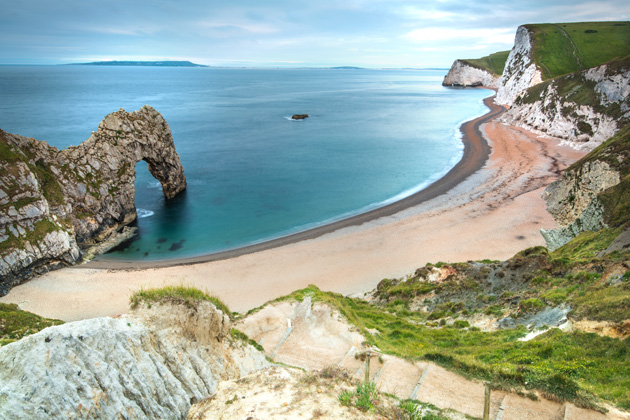
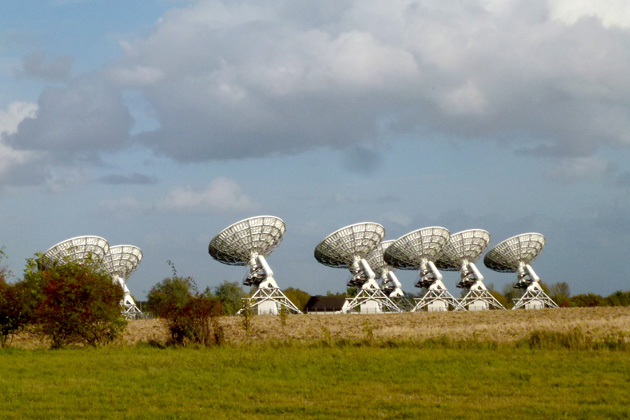

Project Hail Mary
Main Content

Set in the USA (when it's not in space), Project Hail Mary was filmed entirely in the UK. Find out where.
Most of the film was shot at the venerable (as in dating from the 1930s) Shepperton Studios in Surrey where, avoiding the dread green screen, the interior of the 'Hail Mary' spaceship was built.
"Grover Cleveland Middle School", where science teacher Ryland Grace (Ryan Gosling) unloads most of the exposition about the 'Petrova Line' eating away our sun, and where he's approached by Eva Stratt (Sandra Hüller) for input into a team searching for the cause, is The Hemel Hempstead School, Heath Lane, Hemel Hempstead in Hertfordshire.
It's not the town's first brush with cinema sci-fantasy – its hospital was seen in Guardians of the Galaxy and way back in 1957 Hemel's New Town – then under construction – became 'Winnerden Flats' for Quatermass 2.

Much of the space establishment, at which the project to save the sun is based, was filmed at the Mullard Radio Astronomy Observatory at Lord's Bridge, a former ordnance storage site on the A603 south of Cambridge.
Fair enough, after all it's home to a number of the world's largest and most advanced radio telescopes (including the One-Mile Telescope, 5-km Ryle Telescope, and the Arcminute Microkelvin Image if you're into these things).
Scenes aboard the aircraft carrier were filmed on board RFA (Royal Fleet Auxiliary) Wave Knight, at the naval base in Portsmouth, Hampshire. This was a fast fleet tanker tasked with providing fuel, food, water, and ammunition to Royal Navy vessels around the world. And that's the ship's bar where the flinty Stratt loosens up with a spot of karaoke.
Apparently, while in Portsmouth, scenes were filmed on Southsea's South Parade Pier but it seems like this sequence ended up on the cutting room floor (if that's where cut scenes still end up in the digital age)
Avoiding spoilers, I'll just say that the beach overlooked by the spectacular natural sea-arch is Durdle Door, west of West Lulworth between Weymouth and Swanage on the B3070 in Dorset. It's location previously seen in John Schlesinger’s 1967 Thomas Hardy adaptation Far From the Madding Crowd , with Julie Christie and Terence Stamp, and in the 1997 biopic Wilde, with Stephen Fry as writer Oscar Wilde.
Visit Info
Visit The Film Locations
UK | Cambridgeshire
Visit: Cambridgeshire
Visit: Cambridge (rail: Cambridge, from London Liverpool Street or King's Cross)
UK | Dorset
Visit: Dorset
Visit: Durdle Door (rail: Wool, from London Waterloo)
UK | Hertfordshire
Visit: Hertfordshire
UK | Hampshire
Visit: Hampshire
Visit: Portsmouth